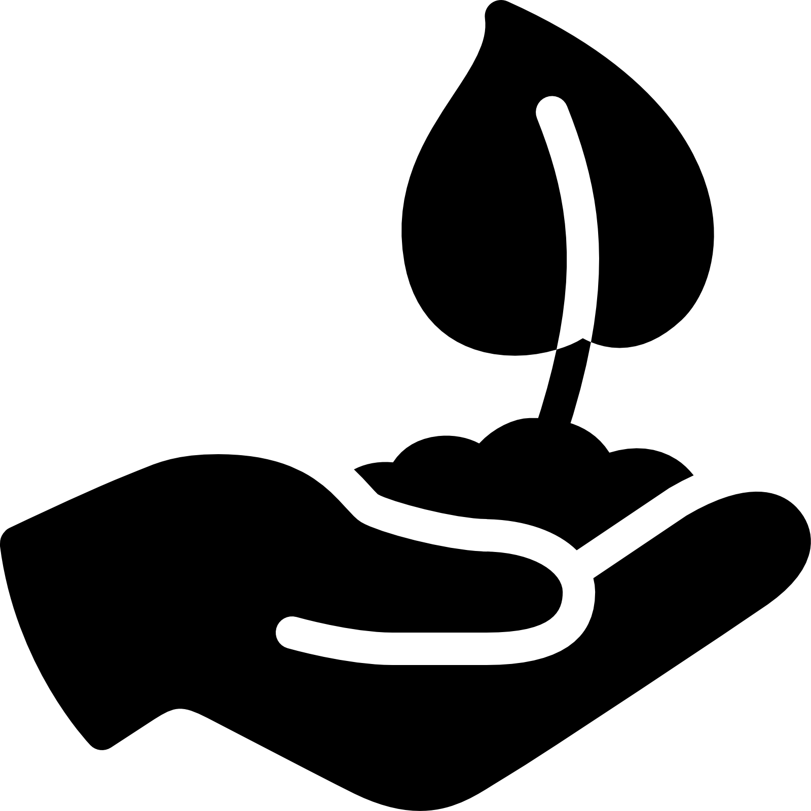
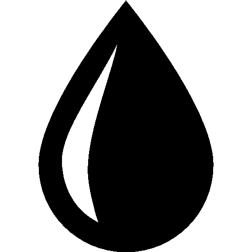

Toxicity: Stems, leaves, and roots toxic to pets, toxic to people
Season: Late spring/ early summer
Location: Plant in location with lots of direct sunlight at least 6-8 hours

Thrive in slightly acidic and consistently damp soil conditions. While they prefer loamy soils, they are adaptable and can flourish in typical garden soil, provided it has good drainage.

Ensure your tomato plants receive approximately one inch of water per week. In conditions of heat and dryness, increase this amount to prevent dehydration. Regular watering helps avoid problems such as cracking, splitting, or blossom-end rot, keeping your plants healthy and productive.
When watering, be careful not to splash the foliage. Keeping the leaves dry reduces the risk of fungal diseases affecting your plants.
70 - 80 ° F during the day
Hot days above 85 degrees can prevent fruit from setting
Place clear plastic over the soil surrounding your plants to allow the sun to heat the soil.
Remove the plastic and cover the soil with mulch when the temperature increases.
Soil Testing: Start by testing your soil to receive specific fertilization recommendations for your garden.
Selecting Fertilizer: If soil testing is not an option, use a tomato-specific or vegetable fertilizer, which typically contains lower nitrogen levels to prevent excessive leaf growth over fruit production.
Application: Follow the label directions closely to mix the fertilizer properly into the soil.
Additional Fertilization: Once the first fruits appear, apply additional fertilizer to the base of the plants.
Heat Wave Caution: Avoid fertilizing during periods of extreme heat.